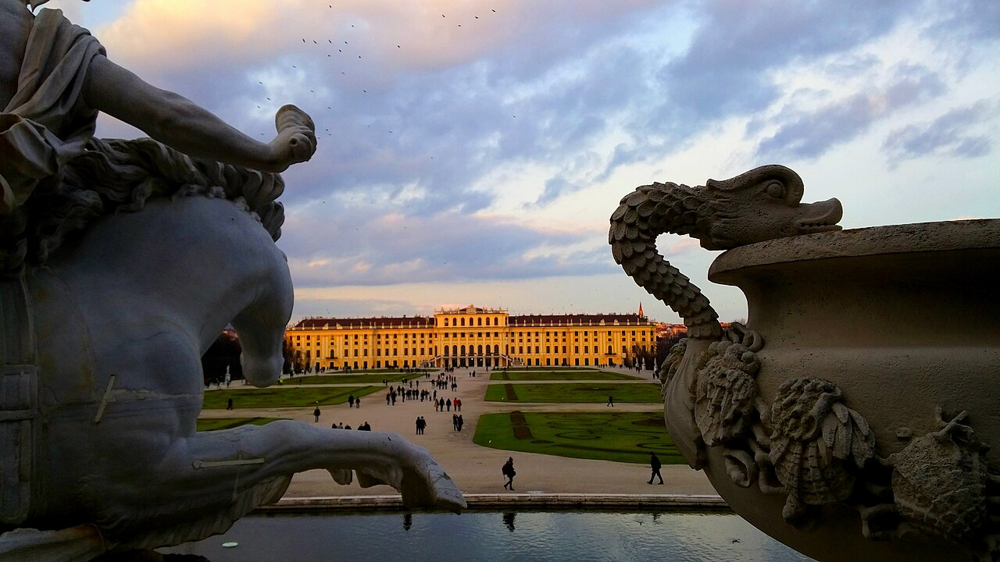
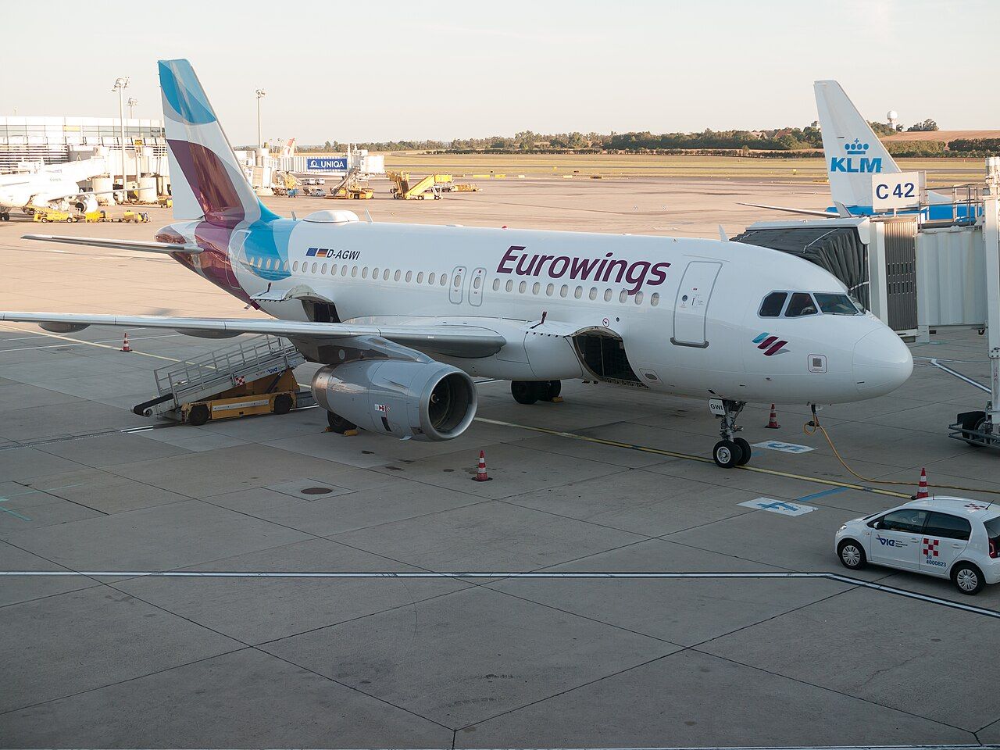
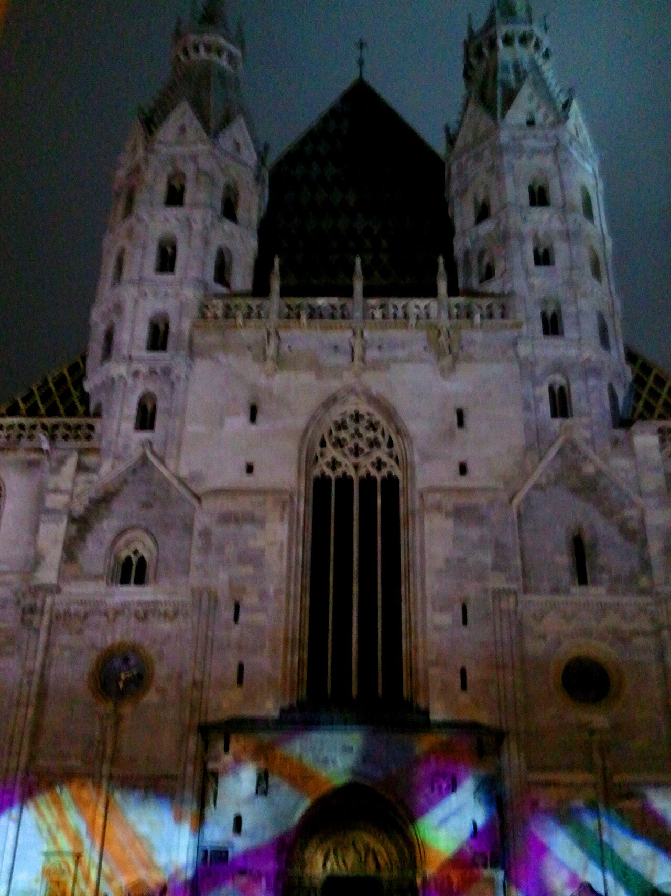
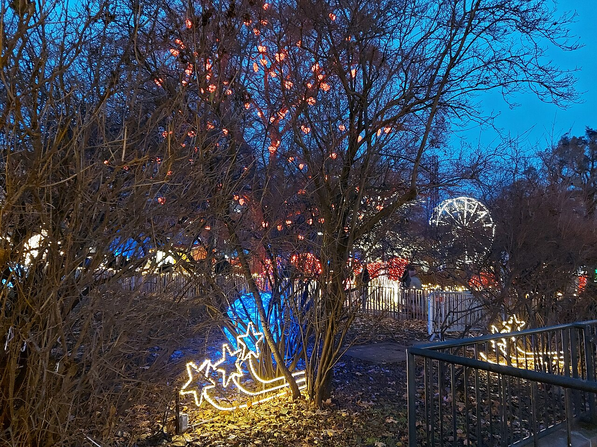
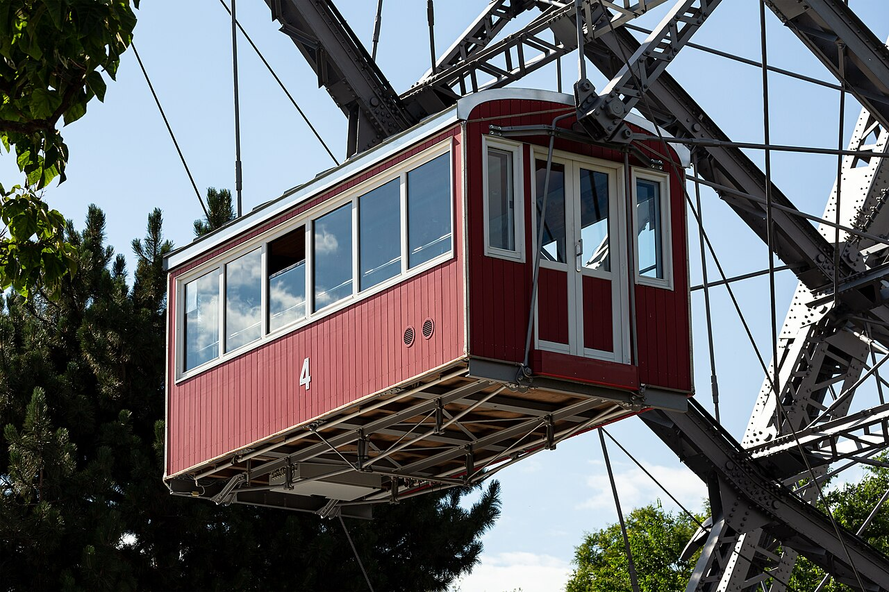
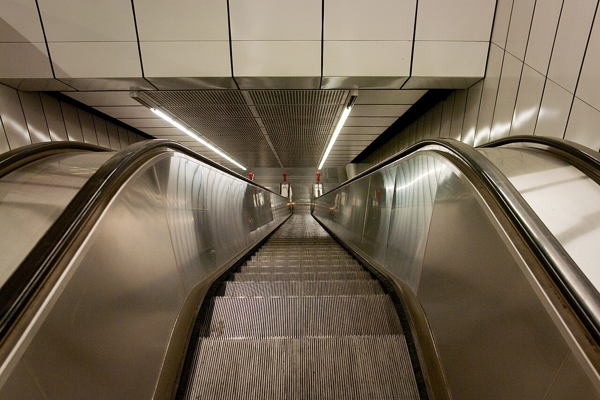
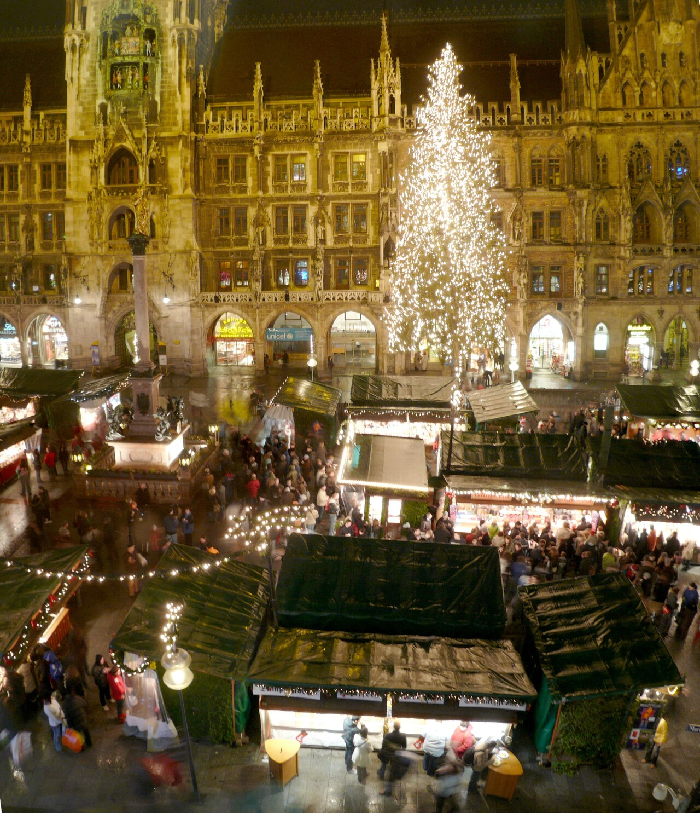

Assessment And Lifecycle
| Dimension | This report |
|---|---|
| Research progress | Refresh in progress |
| Independent review | Historical snapshot: any prior AI approval applies only to that archived version, not the new research round. |
| Freshness | Historical; refresh needed |
| Recommendation | Conditional: The draft verdict is conditional. Vienna is the best-supported base for the exact window, but the cheapest flight is a 2-stop itinerary of about 31 hours outbound with the airline not recorded, and document and remote-work eligibility remain unresolved. |
| Research confidence | Insufficient evidence: no explicit assessment was recorded. |
| Itinerary confidence | Insufficient evidence: no explicit assessment was recorded. |
| Price evidence | Partly observed: The flight party fare is an observed KAYAK snapshot, but baggage, hotel nights, tax and the other cost lines are not observed. See the cost basis below. |
| Booking readiness | Checks outstanding: no automated booking clearance or purchase authorization |
What The Labels Mean
| Research progress | Not started; Running / Refresh in progress; Complete; Incomplete / blocked. A blocked attempt is not completed research. |
|---|---|
| Independent review | Pending; Changes requested; Approved; Unavailable. Four separate AI contexts check sources, consistency, coverage and opportunities for this exact draft. This is not human certification. |
| Freshness | Current; Refresh needed; Historical. Research is historical after 30 days or changed trip constraints. Price snapshots are historical after 24 hours. Reports stay visible. |
| Recommendation | Strong fit: compelling match; Conditional: depends on named checks; Weak fit: substantial tradeoffs; Not recommended: a supported adverse conclusion; Not assessable: insufficient grounding. |
| Confidence | High: strong, corroborated coverage; Moderate: useful evidence with material gaps; Low: major unverified assumptions; Insufficient evidence: no defensible assessment. Qualitative judgment, not a probability. |
| Price evidence | Observed snapshot: recorded provider prices; Partly observed: a mix of observed and estimated costs; Estimate only: planning arithmetic, not an available offer. |
| Booking readiness | Checks outstanding; Ready for user verification; Do not book. Review approval never proves current availability or entry eligibility. |
For your decision, not permission to book. Estimates, unverified eligibility and unresolved conditions remain visible. Ratings are researcher-prepared labels with a stated basis, not independent reviewer approvals. Trip-purpose wording is removed from this public view.
Options And Value
Planning confidence: provisional; route timing, closures and reservations need confirmation. Booking readiness: not verified. Ratings are qualitative labels with a stated basis, not numerical scores.
Option 1: Austria and Germany
Vienna wins this candidate because SFO produced the lowest core-window party fare among the three configured Bay Area airports, Vienna has unusually strong dated markets through Jan 6, and the city supports indoor food, museums and palace alternatives in winter. The price advantage is partly offset by a very long itinerary and an arrival that may consume Christmas Day.
Long 2-stop routing via YYZ with full intermediate routing unrecorded and unverified arrival day; a separate 1-stop Air Canada option costs USD 3,142 party; baggage excluded; hotel taxes, dates and room terms need recheck; cold, short daylight and variable snow; many Vienna markets end Dec 23-26 even though Schönbrunn and Ice World continue, with Prater only if open; entry, transit, US re-entry and remote-work documents are unresolved.
Party cost: USD 6,880. Travelers: 2. estimate; observed 2026-10-10T05:00:53Z.
2026-12-23 to 2027-01-02
| Party cost line | USD | Basis | Calculation, assumptions and sources |
|---|---|---|---|
| Flights | 3,334 | partly observed | USD 3,094 observed party fare for two adults (USD 1,547 per person, excluding baggage) plus a USD 240 estimated baggage allowance. |
| Hotels | 1,656 | derived | USD 160 per night observed for a 10-night Dec 23 to Jan 2 search, applied to 9 modeled nights, plus an assumed 15% tax and fee allowance. The 9-night total and the tax are not observed. |
| Meals | 560 | estimate | Estimated allowance. No source is cited in the draft. |
| Ground transport | 280 | estimate | Estimated allowance for airport transfers and local transport. No source is cited in the draft. |
| Activities | 450 | estimate | Estimated allowance for museums, palaces and markets. Opening hours and prices are unverified. |
| Insurance and contingency | 600 | estimate | Contingency allowance. Not sourced. |
Flight Choice
KAYAK rendered a core-window SFO-VIE search for two adults in USD. Cheapest displayed option was USD 1,547 per person / USD 3,094 party total, a 2-stop itinerary via Toronto Pearson (airline not recorded in the saved evidence), with 31h05 outbound and 33h35 return. The separate displayed best option was USD 1,571 per person / USD 3,142 party total on Air Canada, 1 stop via YYZ, with 24h18 outbound. KAYAK stated prices exclude baggage fees; the USD 3,334 budget line adds a USD 240 baggage allowance as an estimate, while USD 3,094 remains the observed party fare. Historical comparison snapshot, not an offer or purchase authorization. Recheck the same itinerary on airline-direct pages before any decision.
Lodging Choice
KAYAK Vienna search for 2026-12-23 to 2027-01-02, two guests, displayed Spark by Hilton Vienna Messe Prater (Leopoldstadt, 4-star, 9.0) at USD 160/night including fees but before taxes and with free-cancellation options in the result set. The saved flight evidence records 31h05 outbound but no departure time or rendered arrival-day label, so arrival timing is unverified. This budget provisionally models nine nights from Dec 24 to Jan 2 at the observed nightly rate plus a 15% tax/city-fee allowance (USD 1,656); the nightly rate was observed for the Dec 23-Jan 2 search window and must be rechecked for the actual stay, and neither the nine-night all-in total nor tax is observed.
Provider-attempt evidence is absent in this legacy dossier; its numeric allocations cannot be treated as verified offers.
Decision summary


Evidence observed: 2026-10-10T05:00:53Z
Entry and transit

.jpg){kind=link}
Evidence observed: 2026-10-10T05:00:53Z
Climate and weather


Evidence observed: 2026-10-10T05:00:53Z
Experiences and closures


Evidence observed: 2026-10-10T05:00:53Z
Neighborhoods and lodging


Evidence observed: 2026-10-10T05:00:53Z
Transport and travel fatigue

_(4177801143).jpg){kind=link}
Evidence observed: 2026-10-10T05:00:53Z
Budget and value
Evidence observed: 2026-10-10T05:00:53Z
Risks and cancellation
Evidence observed: 2026-10-10T05:00:53Z
Alternatives and pushback


Evidence observed: 2026-10-10T05:00:53Z
Provisional Itinerary
Itinerary follows Option 1: Austria and Germany.
Day 1 · 2026-12-23 · SFO → Vienna via YYZ (2 stops; full routing not recorded)
Depart on the selected lowest-observed SFO-VIE comparison itinerary; saved evidence records a 2-stop route via YYZ with a long duration. Treat this as a priced candidate only and recheck the complete routing, airline and baggage/fare rules on airline-direct pages.
Lodging: No Vienna night assumed on departure date; the hotel budget provisionally uses nine nights from Dec 24 to Jan 2 pending arrival-time confirmation.
Transfer: Avoid a self-transfer; use a single-ticket connection only after transit eligibility is confirmed.
Weather alternative: If winter disruption or missed connection risk rises, protect the connection and shift the first sightseeing day rather than adding a risky separate ticket.
https://www.kayak.com/flights/SFO-VIE/2026-12-23/2027-01-02/2adults · https://www.wien.info/en/now-on/christmas/christmas-markets-342664 · https://www.kayak.com/hotels/Vienna,Austria-c22046/2026-12-23/2027-01-02/2adults · https://europa.eu/youreurope/citizens/travel/entry-exit/non-eu-nationals/index_en.htm · https://www.uscis.gov/archive/faqs-for-individuals-in-h-1b-nonimmigrant-status · https://www.cityairporttrain.com/en · https://www.viennaairport.com/en/passengers/arrival__departure/city_airport_train_cat · https://www.kayak.com/flights/SJC-VIE/2026-12-23/2027-01-02/2adults · https://www.kayak.com/flights/OAK-VIE/2026-12-23/2027-01-02/2adults · https://www.kayak.com/flights/SFO-VIE/2026-12-23/2027-01-06/2adults · https://www.kayak.com/flights/SFO-MUC/2026-12-23/2027-01-02/2adults · https://www.kayak.com/flights/SFO-FRA/2026-12-23/2027-01-02/2adultsDay 2 · 2026-12-24 · Vienna – Leopoldstadt (provisional arrival day)
Arrive/check in only if airline-direct recheck confirms a Dec 24 arrival; keep the day for recovery, a light meal and rest. Do not reserve a fixed market or museum before arrival timing and holiday hours are confirmed.
Lodging: Spark by Hilton Vienna Messe Prater candidate; provisional nine-night model begins this night.
Transfer: Vienna Airport to Wien Mitte via official CAT bus/train replacement, then U-Bahn/taxi; allow holiday buffer and confirm transit eligibility.
Weather alternative: Keep the day uncommitted for delays.
https://www.kayak.com/flights/SFO-VIE/2026-12-23/2027-01-02/2adults · https://www.wien.info/en/now-on/christmas/christmas-markets-342664 · https://www.kayak.com/hotels/Vienna,Austria-c22046/2026-12-23/2027-01-02/2adults · https://europa.eu/youreurope/citizens/travel/entry-exit/non-eu-nationals/index_en.htm · https://www.uscis.gov/archive/faqs-for-individuals-in-h-1b-nonimmigrant-status · https://www.cityairporttrain.com/en · https://www.viennaairport.com/en/passengers/arrival__departure/city_airport_train_cat · https://www.kayak.com/flights/SJC-VIE/2026-12-23/2027-01-02/2adults · https://www.kayak.com/flights/OAK-VIE/2026-12-23/2027-01-02/2adults · https://www.kayak.com/flights/SFO-VIE/2026-12-23/2027-01-06/2adults · https://www.kayak.com/flights/SFO-MUC/2026-12-23/2027-01-02/2adults · https://www.kayak.com/flights/SFO-FRA/2026-12-23/2027-01-02/2adultsDay 3 · 2026-12-25 · Vienna – Leopoldstadt and central Vienna
Christmas Day: use a low-pressure neighborhood orientation, confirmed-open indoor venue or café; Schönbrunn market is optional only if hours and energy permit.
Lodging: Spark by Hilton Vienna Messe Prater candidate.
Transfer: U-Bahn/taxi after checking holiday service; avoid a fixed timetable.
Weather alternative: Stay indoors at a café, museum or hotel if cold, rain or fatigue dominates.
https://www.kayak.com/flights/SFO-VIE/2026-12-23/2027-01-02/2adults · https://www.wien.info/en/now-on/christmas/christmas-markets-342664 · https://www.kayak.com/hotels/Vienna,Austria-c22046/2026-12-23/2027-01-02/2adults · https://www.munich.travel/en/topics/markets-festivals/christmas-markets-munich · https://www.wien.info/en/travel-info/transport · https://www.cityairporttrain.com/en · https://www.viennaairport.com/en/passengers/arrival__departure/city_airport_train_cat · https://europa.eu/youreurope/citizens/travel/entry-exit/non-eu-nationals/index_en.htmDay 4 · 2026-12-26 · Rathausplatz, Innere Stadt and Schönbrunn
Rathausplatz/Stephansplatz markets if open, then Schönbrunn Palace or market; verify Dec 26 hours before reserving.
Lodging: Spark by Hilton Vienna Messe Prater.
Transfer: U-Bahn/tram; avoid a fixed timetable around holiday crowds.
Weather alternative: Kunsthistorisches or Naturhistorisches Museum, cafés and indoor food halls.
https://www.kayak.com/flights/SFO-VIE/2026-12-23/2027-01-02/2adults · https://www.wien.info/en/now-on/christmas/christmas-markets-342664 · https://www.kayak.com/hotels/Vienna,Austria-c22046/2026-12-23/2027-01-02/2adults · https://weatherspark.com/m/81358/12/Average-Weather-in-December-in-Vienna-Austria · https://www.munich.travel/en/topics/markets-festivals/christmas-markets-munichDay 5 · 2026-12-27 · Innere Stadt, Freyung and Am Hof
Explore central Vienna, coffeehouse culture, St Stephen’s area and any remaining market/holiday lights; official dates show Freyung and Am Hof close Dec 23, so use museums and shops instead.
Lodging: Spark by Hilton Vienna Messe Prater.
Transfer: Walk/U-Bahn with warm-up stops.
Weather alternative: Museum quarter, food tour or palace interiors if wet/snowy.
https://www.kayak.com/flights/SFO-VIE/2026-12-23/2027-01-02/2adults · https://www.wien.info/en/now-on/christmas/christmas-markets-342664 · https://www.kayak.com/hotels/Vienna,Austria-c22046/2026-12-23/2027-01-02/2adults · https://weatherspark.com/m/81358/12/Average-Weather-in-December-in-Vienna-Austria · https://www.munich.travel/en/topics/markets-festivals/christmas-markets-munichDay 6 · 2026-12-28 · Neubau and Mariahilf
Food-and-design day around Neubau/Mariahilf, Naschmarkt area and indoor galleries; choose restaurants with holiday hours confirmed.
Lodging: Spark by Hilton Vienna Messe Prater.
Transfer: U-Bahn/tram; no car required.
Weather alternative: Extend indoor museum time and coffeehouse stops.
https://www.kayak.com/flights/SFO-VIE/2026-12-23/2027-01-02/2adults · https://www.wien.info/en/now-on/christmas/christmas-markets-342664 · https://www.kayak.com/hotels/Vienna,Austria-c22046/2026-12-23/2027-01-02/2adults · https://weatherspark.com/m/81358/12/Average-Weather-in-December-in-Vienna-Austria · https://www.wien.info/en/travel-info/transport · https://europa.eu/youreurope/citizens/travel/entry-exit/non-eu-nationals/index_en.htmDay 7 · 2026-12-29 · Belvedere and Landstraße
Belvedere Palace and its market while open through Dec 31; pair with Landstraße food and a relaxed evening.
Lodging: Spark by Hilton Vienna Messe Prater.
Transfer: U-Bahn/tram; reserve timed museum entry only after hours are confirmed.
Weather alternative: Replace outdoor palace garden time with additional galleries.
https://www.kayak.com/flights/SFO-VIE/2026-12-23/2027-01-02/2adults · https://www.wien.info/en/now-on/christmas/christmas-markets-342664 · https://www.kayak.com/hotels/Vienna,Austria-c22046/2026-12-23/2027-01-02/2adults · https://www.munich.travel/en/topics/markets-festivals/christmas-markets-munich · https://www.wien.info/en/travel-info/transport · https://www.cityairporttrain.com/en · https://www.viennaairport.com/en/passengers/arrival__departure/city_airport_train_catDay 8 · 2026-12-30 · Vienna city center
Indoor culture anchor: Kunsthistorisches/Naturhistorisches Museum or music performance; keep a flexible restaurant plan before New Year closures.
Lodging: Spark by Hilton Vienna Messe Prater.
Transfer: Public transport with holiday service check.
Weather alternative: Coffeehouse, museum and covered-market loop.
https://www.kayak.com/flights/SFO-VIE/2026-12-23/2027-01-02/2adults · https://www.wien.info/en/now-on/christmas/christmas-markets-342664 · https://www.kayak.com/hotels/Vienna,Austria-c22046/2026-12-23/2027-01-02/2adults · https://weatherspark.com/m/81358/12/Average-Weather-in-December-in-Vienna-Austria · https://www.munich.travel/en/topics/markets-festivals/christmas-markets-munichDay 9 · 2026-12-31 · Prater and Vienna
Prater winter market/Ice World if open; choose a low-stress New Year plan and confirm fireworks, transit and Dec 31 closure details (Ice World is listed closed Dec 31).
Lodging: Spark by Hilton Vienna Messe Prater.
Transfer: Return early or use a confirmed transit plan; do not assume late-night service.
Weather alternative: Indoor dinner and concert/coffeehouse plan; avoid exposed outdoor time in poor weather.
https://www.kayak.com/flights/SFO-VIE/2026-12-23/2027-01-02/2adults · https://www.wien.info/en/now-on/christmas/christmas-markets-342664 · https://www.kayak.com/hotels/Vienna,Austria-c22046/2026-12-23/2027-01-02/2adults · https://www.munich.travel/en/topics/markets-festivals/christmas-markets-munich · https://www.wien.info/en/travel-info/transport · https://www.cityairporttrain.com/en · https://www.viennaairport.com/en/passengers/arrival__departure/city_airport_train_catDay 10 · 2027-01-01 · Vienna or weather-flexible day trip
New Year’s Day: slow breakfast and one confirmed-open museum/palace. Consider a day trip only if rail, weather and opening hours are rechecked; no Alpine snow is guaranteed.
Lodging: Spark by Hilton Vienna Messe Prater.
Transfer: Use public transit; verify holiday schedules.
Weather alternative: Stay in Vienna for indoor culture and food.
https://www.kayak.com/flights/SFO-VIE/2026-12-23/2027-01-02/2adults · https://www.wien.info/en/now-on/christmas/christmas-markets-342664 · https://www.kayak.com/hotels/Vienna,Austria-c22046/2026-12-23/2027-01-02/2adults · https://weatherspark.com/m/81358/12/Average-Weather-in-December-in-Vienna-Austria · https://www.munich.travel/en/topics/markets-festivals/christmas-markets-munichDay 11 · 2027-01-02 · Vienna → SFO (return routing unrecorded in saved evidence)
Check out and take the return candidate; the saved evidence records a 33h35 return but not the intermediate routing. Allow generous time for airport formalities and document checks. Reconfirm US re-entry documents and airline routing before travel.
Lodging: Check out of Spark by Hilton Vienna Messe Prater.
Transfer: Official CAT/Vienna Airport Lines/S7 or hotel transfer; exact fare and replacement-bus schedule must be checked near departure.
Weather alternative: If rail/airport disruption occurs, use a confirmed alternate official connection; never self-transfer on separate tickets as a “safe” saving.
https://www.kayak.com/flights/SFO-VIE/2026-12-23/2027-01-02/2adults · https://www.wien.info/en/now-on/christmas/christmas-markets-342664 · https://www.kayak.com/hotels/Vienna,Austria-c22046/2026-12-23/2027-01-02/2adults · https://europa.eu/youreurope/citizens/travel/entry-exit/non-eu-nationals/index_en.htm · https://www.uscis.gov/archive/faqs-for-individuals-in-h-1b-nonimmigrant-status · https://www.wien.info/en/travel-info/transport · https://www.cityairporttrain.com/en · https://www.viennaairport.com/en/passengers/arrival__departure/city_airport_train_cat · https://www.kayak.com/flights/SJC-VIE/2026-12-23/2027-01-02/2adults · https://www.kayak.com/flights/OAK-VIE/2026-12-23/2027-01-02/2adults · https://www.kayak.com/flights/SFO-VIE/2026-12-23/2027-01-06/2adults · https://www.kayak.com/flights/SFO-MUC/2026-12-23/2027-01-02/2adults · https://www.kayak.com/flights/SFO-FRA/2026-12-23/2027-01-02/2adults
Open Flags
- Whether each traveler with the reported Indian passport nationality has a valid Schengen visa, residence permit or other exemption for Austria/Germany and any transit point.
- Both travelers' passport validity, visa stamps, H-1B/I-797 evidence, partner status and US re-entry documents through 2027-01-02.
- Employer/legal permission for remote work abroad in the three remote-dependent windows.
- Whether the provisional USD 7,000 ceiling can absorb baggage, hotel taxes, holiday repricing and a near-date contingency; only the user may change it.
- All-in hotel taxes, room occupancy, breakfast and cancellation conditions on a fresh booking-provider or hotel-direct recheck.
- Exact Christmas/New Year hours and reservations for each museum, palace, restaurant and rail/day-trip service.
- source: Live recheck remains unavailable: read-only fetch of the KAYAK core SFO-VIE page returned only boilerplate (no rendered prices) and the official CAT page returned only a cookie banner (no extractable fares/schedule). KAYAK figures are historical comparison snapshots (observed 2026-10-10T05:00:53Z) and airline-direct recheck is required before any decision. Honestly disclosed in limitations, flightDetails ('Historical comparison snapshot, not an offer or purchase authorization') and nextChecks.
- opportunities: Retained live-recheck limitation, not a defect: KAYAK figures are historical comparison snapshots (live recheck unavailable; JS-rendered pages returned only boilerplate on fetch). Airline-direct recheck is required before any decision. Honestly disclosed in limitations, flightDetails ('Historical comparison snapshot, not an offer or purchase authorization') and nextChecks.
- opportunities: Retained live-recheck limitation, not a defect: WeatherSpark climatology and CAT schedule/fares were not extractably reverified live; caveats are retained in the draft's climate and transport sections, and the limitations list states climate evidence is regional climatology, not a forecast.
Your Action Plan
Resolve high-priority checks before nonrefundable commitments. Verified routing, inclusive prices and eligibility can change the value assessment; changed hours or weather can change the itinerary.
- High priority: Reprice SFO, OAK and SJC for all four configured windows on airline-direct sites with two adults, baggage and exact fare conditions; retain the rendered search context.
- High priority: Recheck Spark by Hilton or a central fully cancellable Vienna alternative for the actual arrival/departure dates and all taxes.
- High priority: Obtain official consular confirmation of Schengen eligibility and transit requirements for both travelers.
- High priority: Confirm H-1B visa stamps/I-797 and partner re-entry documents with the employer or immigration counsel before any nonrefundable commitment.
- Medium priority: Confirm remote-work permission or restrict analysis to the non-remote core window.
- Medium priority: Check near-date official forecasts, airport/rail operating status and holiday opening hours before changing the verdict.
Limitations And Freshness
Research expires after 30 days; price snapshots become historical after 24 hours. Always recheck current availability. Failed or incomplete checks are not confirmed facts.
- Actual researcher model identity is unverified; configured model is not runtime proof.
- Regular browser canvas used; cookie and login isolation are unknown.
- KAYAK displayed comparison-provider prices per person excluding baggage fees; airline-direct recheck is still required and no current offer is guaranteed.
- The selected hotel observation was nightly including fees but before taxes; the nine-night total and tax uplift are modeled estimates, not an observed all-in total.
- Both travelers' Schengen/entry and US re-entry documents, including the user-reported H-1B visa-stamp validity and partner status, are unresolved.
- No reliable December 2026 forecast exists at this lead time; climate evidence is regional climatology, not a forecast.
- Remote-work-dependent date windows are not buyable until employer and legal permission abroad are confirmed.